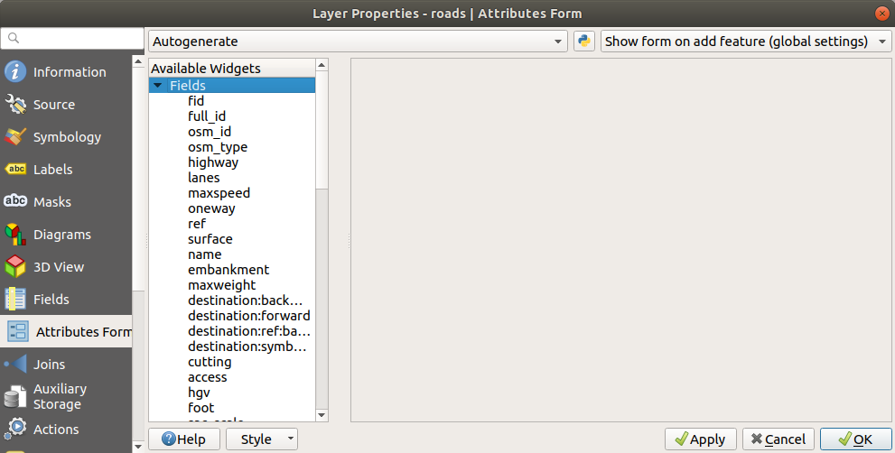
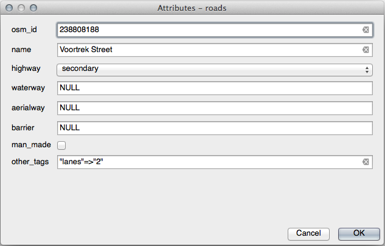
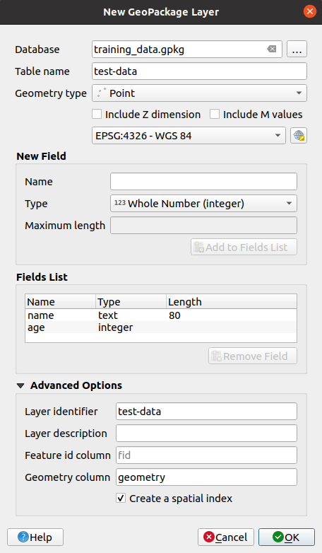
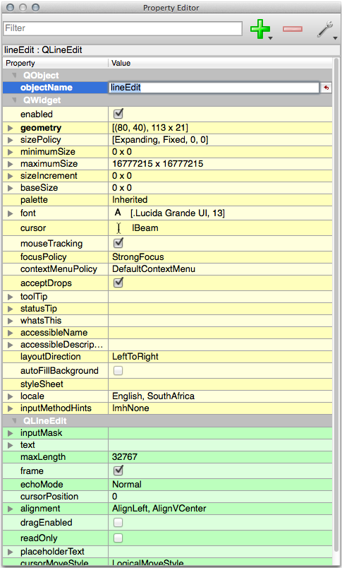

5.3. သင်ခန်းစာ- ပုံစံများ (Lesson: Forms)
Digitize ပြုလုပ်ပြီး data အသစ်များ ထည့်သွင်းသောအခါ အဆိုပါ feature အတွက် attribute ထဲတွင် ထည့်သွင်းရမည့် dialog တစ်ခုပေါ်လာပါသည်။ Default အနေဖြင့် အဆိုပါ dialog သည် အလွန်ကြည့်ကောင်းခြင်းမရှိပါ။ ၎င်းသည် သုံးစွဲရာတွင် အခက်အခဲဖြစ်စေနိုင်ပါသည်၊ အထူးသဖြင့် dataset များစွာကို ဖန်တီးရမည်ဆိုလျှင် သို့မဟုတ် အခြားသူများကို digitize ကူညီလုပ်ဆောင်ပေးစေလိုသောအခါ ကူညီလုပ်ဆောင်ပေးမည့်သူများအတွက် default form များသည် ရှုပ်ထွေးနေစေတတ်ပါသည်။
QGIS တွင် layer တစ်ခုအတွက် ကိုယ်ပိုင်စိတ်ကြိုက် dialog များကို ဖန်တီးနိုင်ပါသည်။ ဤသင်ခန်းစာတွင် မည်သို့လုပ်ဆောင်ရမည်ကို ပြသမည်ဖြစ်ပါသည်။
ဤသင်ခန်းစာအတွက် ရည်မှန်းချက်- Layer တစ်ခုအတွက် form တစ်ခုဖန်တီးရန်
5.3.1. ★☆☆ လိုက်လုပ်ကြည့်ပါ- QGIS ၏ Form Design လုပ်ဆောင်ချက်ကိုအသုံးပြုခြင်း (Follow Along: Using QGIS’ Form Design Functionality)
Layers panel ထဲတွင်
roadslayer ကို select လုပ်ပါ။Edit Mode ကိုဖွင့်ပါ
roadslayer ၏ attribute ဇယားကို ဖွင့်ပါဇယားထဲရှိ cell တစ်ခုခုပေါ်တွင် right-click နှိပ်ပါ။ Open form entry ပါဝင်သော menu အတိုတစ်ခု ပေါ်လာပါလိမ့်မည်။
အဆိုပါ layer အတွက် QGIS မှထုတ်ပေးသော form ကိုကြည့်ရန် ၎င်းအပေါ်တွင် click နှိပ်ပါ
Attribute Table ထဲတွင် သီးသန့် street တစ်ခုကို ရှာဖွေနေရခြင်းထက် မြေပုံကို ကြည့်နေစဉ်တွင် လုပ်ဆောင်ရခြင်းသည် ပိုမိုကောင်းမွန်ပါသည်။
Layers panel ထဲတွင် roads layer ကို select လုပ်ပါ။
 Identify Features tool ကိုအသုံးပြု၍ မြေပုံထဲတွင် street တစ်ခုခုပေါ်တွင် click နှိပ်ပါ။
Identify Features tool ကိုအသုံးပြု၍ မြေပုံထဲတွင် street တစ်ခုခုပေါ်တွင် click နှိပ်ပါ။Identify Results panel ပွင့်လာမည်ဖြစ်ပြီး click လုပ်ထားသော feature နဲ့ပတ်သက်သော ယေဘုယျအချက်အလက်များနှင့် field တန်ဖိုးများပါဝင်သော ဖွဲ့စည်ပုံမြင်ကွင်းတစ်ခုကို ပြသမည်ဖြစ်သည်။
Panel ၏ ထိပ်တွင်
 Identify Settings menu ထဲရှိ Auto open form for single feature results တွင် အမှန်ခြစ်ခြစ်ပါ။
Identify Settings menu ထဲရှိ Auto open form for single feature results တွင် အမှန်ခြစ်ခြစ်ပါ။မြေပုံထဲရှိ street တစ်ခုခုပေါ်တွင် click ထပ်နှိပ်ပါ။ ယခင်ကပေါ်ခဲ့သော Identify Results dialog နှင့်အတူ ကြည့်ရှုရအကျွမ်းတဝင်ဖြစ်သော form ကို မြင်တွေ့ရပါလိမ့်မည်-

Identify tool ဖြင့် feature တစ်ခုချင်းပေါ်တွင် click နှိပ်လိုက်တိုင်း Auto open form ကိုအမှန်ခြစ်ခြစ်ထားသရွေ့ ၎င်းအတွက် form သည် ပေါ်လာမည်ဖြစ်သည်။
5.3.2. ★☆☆ မိမိကိုယ်တိုင်ကြိုးစားကြည့်ပါ- တန်ဖိုးများကို Edit လုပ်ရန် Form ကိုအသုံးပြုခြင်း (Try Yourself: Using the Form to Edit Values)
Edit mode ကိုဖွင့်ထားလျှင် feature တစ်ခု၏ attribute များကို edit လုပ်ရန် အဆိုပါ form ကို အသုံးပြုနိုင်ပါသည်။
Edit mode ကိုဖွင့်ပါ (အကယ်၍ မဖွင့်ရသေးလျှင်)
- Identify Features tool ကိုအသုံးပြုပြီး Swellendam ကိုဖြတ်ကာ ရှိနေသော main street ပေါ်တွင် click နှိပ်ပါ-
၎င်း၏ highway တန်ဖိုးကို
secondaryအဖြစ် edit လုပ်ပါ။Edit mode ကိုပိတ်ပြီး edit လုပ်ထားသည်များကို သိမ်းဆည်းပါ။
Attribute Table ကိုဖွင့်ကြည့်ပါက ဇယားထဲတွင် တန်ဖိုးသည် update ဖြစ်နေသည်ကို တွေ့ရမည်ဖြစ်ပြီး ရင်းမြစ် data ထဲတွင်လည်း update ဖြစ်နေမည်ဖြစ်သည်။
5.3.3. ★★☆ လိုက်လုပ်ကြည့်ပါ- Form Field အမျိုးအစားများကို သတ်မှတ်ခြင်း (Follow Along: Setting Form Field Types)
Form တစ်ခုကိုအသုံးပြုပြီး edit ပြုလုပ်ခြင်းသည် ကောင်းမွန်သော်လည်း အရာရာတိုင်းကို ကိုယ်တိုင် လက်ဖြင့် ရိုက်ထည့်ပေးနေရဆဲဖြစ်ပါသည်။ သို့ရာတွင် form များတွင် data များကို အမျိုးမျိုးသောနည်းလမ်းများဖြင့် edit လုပ်နိုင်သော widgets အမျိုးမျိုးရှိပါသည်။
roads layer ၏ Properties… ကိုဖွင့်ပါ။
Fields tab သို့ပြောင်းပါ။ အောက်ပါပုံစံကို မြင်တွေ့ရပါလိမ့်မည်-

Attributes Form tab သို့ပြောင်းပါ။ အောက်ပါပုံစံကို မြင်တွေ့ရပါလိမ့်မည်-
 onewayrow ပေါ်တွင် click နှိပ်ပြီး option များစာရင်းထဲတွင် Widget Type အနေဖြင့် Checkbox ကိုရွေးချယ်ပါ-
OK ကိုနှိပ်ပါ
Edit mode ကိုဖွင့်ပါ (
roadslayer သည် edit mode ထဲတွင် ရှိမနေလျှင်)- Identify Features tool ပေါ်တွင် click နှိပ်ပါ
အစောပိုင်းကရွေးချယ်ထားသော main road ပေါ်တွင် click နှိပ်ပါ
oneway attribute ၏ဘေးတွင် checkbox တစ်ခုရှိနေသည်ကို မြင်တွေ့ရပါလိမ့်မည်၊ True (အမှန်ခြစ်ထားသော) သို့မဟုတ် False (အမှန်ခြစ်ဖြုတ်ထားသော) ကိုရည်ညွှန်းပါသည်။
5.3.4. ★★★ မိမိကိုယ်တိုင်ကြိုးစားကြည့်ပါ- (Try Yourself:)
highway field အတွက် ပိုမိုသင့်လျော်သော form widget တစ်ခုကို သတ်မှတ်ပါ။
အဖြေ
TYPE အတွက်ဆိုလျှင် road (လမ်း) တစ်ခုအတွက်ဖြစ်နိုင်သော အမျိုးအစားများစွာ မရှိပါ၊ အဆိုပါ layer အတွက် attribute ဇယားကို စစ်ဆေးကြည့်လျှင် အမျိုးအစားများကို ကြိုတင်သတ်မှတ်ထားသည်ကို မြင်တွေ့ရပါလိမ့်မည်။
Widget ကို Value Map သို့သတ်မှတ်ပြီး Load Data from Layer ကို click နှိပ်ပါ။
Label dropdown ထဲတွင် roads ကိုရွေးချယ်ပြီး Value နှင့် Description နှစ်မျိုးစလုံးအတွက် highway ကိုရွေးချယ်ပါ-

OK ကို ၃ ကြိမ်နှိပ်ပါ။
Edit mode ပွင့်နေစဉ်တွင် Identify tool အသုံးပြုပြီး street တစ်ခုပေါ်နှိပ်သောအခါ အောက်ပါပုံစံဖြင့် dialog ပွင့်လာပါလိမ့်မည်-

5.3.5. ★★★ မိမိကိုယ်တိုင်စမ်းသပ်ကြည့်ပါ- Test Data ဖန်တီးခြင်း (Try Yourself: Creating Test Data)
မိမိစိတ်ကြိုက် form တစ်ခုကို အစအဆုံး ပြင်ဆင်နိုင်ပါသည်။
Attribute နှစ်ခုပါဝင်သော
test-dataအမည်ဖြင့် point layer တစ်ခုကိုဖန်တီးပါ-name (text)
age (integer)
 Data အနည်းငယ်ရရှိစေရန်အတွက် digitizing tool များကို အသုံးပြုပြီး layer အသစ်ပေါ်တွင် point အနည်းငယ် နေရာချပါ။ Point အသစ်တစ်ခု နေရာချတိုင်း QGIS မှပေးသော default attribute form သာ ပွင့်လာမည်ဖြစ်သည်။
Note
အစောပိုင်းသင်ခန်းစာများတွင် Snapping ကို ဖွင့်ထားလျှင် ပြန်ပိတ်ရန် လိုအပ်ပါလိမ့်မည်။

5.3.6. ★★★ လိုက်လုပ်ကြည့်ပါ- Form အသစ်တစ်ခု ဖန်တီးခြင်း (Follow Along: Creating a New Form)
Attribute data များထည့်သွင်းရန်အတွက် စိတ်ကြိုက် form တစ်ခုကို ဖန်တီးလိုခြင်းဖြစ်သည်။ ထိုသို့လုပ်ဆောင်ရန် QT Designer ကို install ပြုလုပ်ထားရန် လိုအပ်ပါသည် (Form များကို ဖန်တီးသော သူများအတွက်သာ လိုအပ်ပါသည်)။
QT Designer ကိုစတင်ပါ။
ပေါ်လာသော dialog ထဲတွင် dialog အသစ်တစ်ခုကို ဖန်တီးပါ-

Screen ၏ဘယ်ဘက်တွင် Widget Box ကိုရှာဖွေပါ (Default အနေဖြင့်)။ ၎င်းတွင် Line Edit ဟုခေါ်သော item တစ်ခုပါဝင်ပါသည်။
အဆိုပါ item ကို form ထဲသို့ click နှိပ်ပြီး ဆွဲထည့်ပါ။ Form ထဲတွင် Line Edit အသစ်တစ်ခုကို ဖန်တီးပေးမည်ဖြစ်သည်။
ရွေးချယ်ထားသော line edit element အသစ်၏ properties ကို screen ၏ ညာဘက်တစ်လျှောက် (default အနေဖြင့်) တွင် တွေ့ရမည်ဖြစ်သည်-
 ၎င်း၏ အမည်ကို
nameဟုသတ်မှတ်ပါ။Spin Box အသစ်တစ်ခုကို ဖန်တီးပြီး ၎င်း၏အမည်ကို
ageဟုသတ်မှတ်ပါ။Add a New Personစာလုံးအထင်း စာသားဖြင့် Label တစ်ခုကို ထည့်သွင်းပါ (မည်သို့သတ်မှတ်ရမည်ကို object properties ထဲတွင်ကြည့်ပါ)။ နောက်တစ်နည်းအားဖြင့် dialog ၏ခေါင်းစဉ်ကို သူ့အလိုလို သတ်မှတ်ချင်ပေးနိုင်ပါသည် (label တစ်ခုထည့်သွင်းခြင်းထက်)။Line Edit နှင့် Spin Box အတွက် Label တစ်ခုထည့်သွင်းပါ။
Element များကို စိတ်ကြိုက်အနေအထားဖြင့် အစီအစဉ်ချပါ။
Dialog ထဲရှိ တစ်နေရာရာတွင် click နှိပ်ပါ။
Lay Out in a Form Layout ခလုတ်ကို ရှာပါ (default အားဖြင့် screen ၏ အပေါ်ဘက်အစွန်းရှိ toolbar တစ်ခုထဲတွင်)။ ထိုသို့လုပ်ခြင်းသည် dialog ကို အလိုအလျောက် အပြင်အဆင်ပြုလုပ်ပေးသည်။
Dialog ၏ အများဆုံးအရွယ်အစားကို (၎င်း၏ properties ထဲတွင်)
200(အကျယ်) နှင့်150(အမြင့်) သတ်မှတ်ပါ။Form သည် အောက်ပါပုံစံအတိုင်း ဖြစ်သင့်ပါသည်-

Form အသစ်ကို
exercise_data/forms/add_people.uiအဖြစ် သိမ်းဆည်းပါ။သိမ်းဆည်းပြီးသောအခါ Qt Designer ကိုပိတ်နိုင်ပါသည်။
5.3.7. ★★★ လိုက်လုပ်ကြည့်ပါ- Form ကို layer ဖြင့် တွဲဖက်အသုံးပြုခြင်း (Follow Along: Associating the Form with Your Layer)
QGIS သို့ပြန်သွားပါ
test-data layer ကို click နှစ်ချက်နှိပ်ပြီး ၎င်း၏ properties ကိုဖွင့်ပါ။
Layer Properties dialog ထဲရှိ Attributes Form tab ပေါ်တွင် click နှိပ်ပါ။
Attribute editor layout dropdown ထဲတွင် Provide ui-file ကိုရွေးပါ။
… ကိုနှိပ်ပြီး ဖန်တီးထားသော
add_people.uiကိုရွေးပါ-Layer Properties dialog တွင် OK ကိုနှိပ်ပါ
Edit mode ကိုဖွင့်ပြီး point အသစ်တစ်ခုကို နေရာချပါ
ထိုသို့လုပ်ဆောင်သောအခါ ကိုယ်တိုင်ဖန်တီးထားသော စိတ်ကြိုက် dialog ပေါ်လာပါမည် (QGIS မှဖန်တီးပေးသော ယေဘုယျတစ်ခုအစား)။
- Identify Features tool အသုံးပြုပြီး point များထဲမှ တစ်ခုကို click နှိပ်လျှင် identify results ထဲတွင် right-click နှိပ်ပြီး ကိုရွေးချယ်ခြင်းအားဖြင့် form ကို ဖွင့်နိုင်မည်ဖြစ်သည်။
အဆိုပါ layer အတွက် edit mode ကိုဖွင့်ထားလျှင် ဆက်စပ် menu သည် ကိုပြသပေးမည်ဖြစ်ပြီး point စတင်နေရာချပြီးလျှင်ပင် form အသစ်ထဲရှိ attribute များကို ချိန်ညှိနိုင်မည်ဖြစ်သည်။
5.3.8. နိဂုံးချုပ် (In Conclusion)
Form များကို အသုံးပြုပြီး data များကို edit ပြုလုပ်ခြင်း သို့မဟုတ် ဖန်တီးခြင်းများတွင် ပိုမိုလွယ်ကူစေနိုင်ပါသည်။ Widget အမျိုးအစားများကို edit လုပ်ခြင်း သို့မဟုတ် form အသစ်တစ်ခုကို အစအဆုံး ဖန်တီးခြင်းဖြင့် data အသစ်များ digitize ပြုလုပ်မည့်သူများကို အတွေ့အကြုံပိုမိုရစေပြီး နားလည်မှုလွဲခြင်းများနှင့် မလိုလားအပ်သော အမှားများကို လျှော့ချပေးနိုင်ပါသည်။
5.3.9. နောက်ထပ်ဖတ်ရှုရမည်များ (Further Reading)
အထက်ဖော်ပြပါ အဆင့်မြင့်အပိုင်းများကို လေ့လာပြီးစီးပြီး Python နှင့်ပတ်သက်သော ဗဟုသုတရှိလျှင် ဤ blog entry တွင် လေ့လာကြည့်နိုင်ပါသည်။ ထို blog တွင် data validation ၊ autocompletion အစရှိသည့် အဆင့်မြင့်လုပ်ဆောင်မှုများကိုပြုလုပ်နိုင်သော Python logic ဖြင့် စိတ်ကြိုက် feature form များကို ဖန်တီးခြင်းအကြောင်းများပါဝင်ပါသည်။
5.3.10. နောက်ထပ် ဘာအကြောင်းအရာလဲ? (What’s Next?)
Feature တစ်ခုကို identify ပြုလုပ်ရာတွင် form တစ်ခုကို ဖွင့်ခြင်းသည် QGIS မှလုပ်ဆောင်နိုင်သော စံလုပ်ဆောင်ချက် (action) များထဲမှ တစ်ခုဖြစ်ပါသည်။ သို့သော် စိတ်ကြိုက်လုပ်ဆောင်ချက်များကိုလည်း သတ်မှတ်ပေးနိုင်ပါသည်။ ထိုအကြောင်းအရာကို နောက်သင်ခန်းစာတွင် သင်ကြားပေးမည်ဖြစ်ပါသည်။